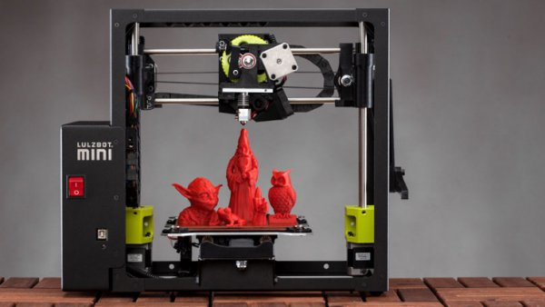
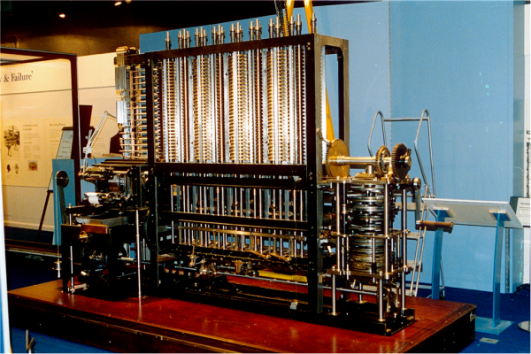
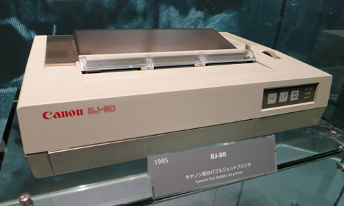
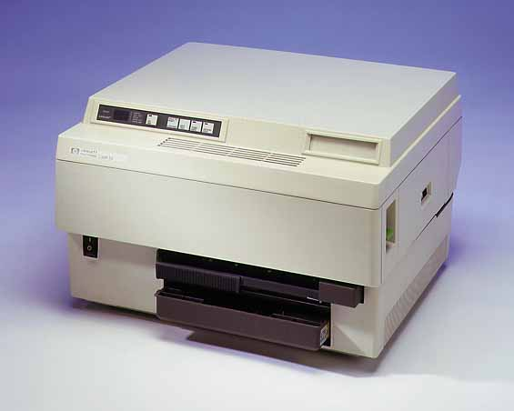
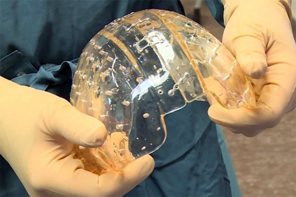
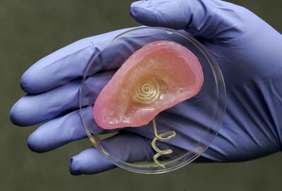
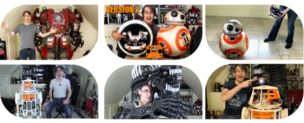

Розвиток технології 3-D друку
- Досить нещодавно думки про те, що на домашньому принтері можна буде роздрукувати будь-що, були із області фантастики. Але на сьогодні мрії фантастів починають набувати споживчої реальності. 3D-принтери виходять на масовий ринок і сьогодні такий «домашній міні-завод» може придбати чи не кожен.
- 
- Перше, про що може подумати людина, яка не зустрічалась із технологією 3D-друку, можна описати декількома словами: «це всього лише дорога іграшка», проте це не так. Технологія тривимірного друку розширила горизонти для медицини, промислового прототипування, освіти. Значення і масштаби цих розширень можуть бути порівнянні з винаходом конвеєра, який докорінно змінив існуючі на той час галузі виробництва і дозволив розвиватись новим. Багато експертів пророкують створення фабрик нового формату, які не будуть спеціалізуватися на декількох видах однотипної продукції, а які зможуть виробляти буквально все що завгодно завдяки універсальності технології 3D-друку та можливостям масштабувати принтер навіть до розмірів цілого будинку.
- Знайоме всім слово «принтер» прийшло до нас із англійської мови і перекладається як «друк». Напевно, кожен бачив і використовував звичайні прості принтери, на яких можна вивести будь-який текстовий або графічний матеріал в паперовому вигляді.
- Найперший у світі принтер (якщо цей пристрій взагалі можна так називати) почали розробляти ще далекого 1822 року. Принтер створив Чарльз Беббідж, пристрій носив назву «Різницева машина» [13].
- 
- Планувалося, що це буде комп'ютер, який буде мати можливість виводити документи на друк. Фахівці використовували перший комп'ютер-принтер з метою навігації та проектування. Крім того, застосовували цей пристрій також і в банківській сфері. Так звана «різницева машина» виконувала найпростіші обчислення, роздруковуючи на папері всі результати.
- У готовому вигляді як креслення прототип сучасних принтерів постав перед споживачем лише в 1834 році.
- 1981 року термічна технологія струменевого друку була представлена на виставці Canon Grand Fair. А 1985 року з'явилася перша комерційна модель монохромного принтера Canon BJ-80.
- 
- У травні 1984 року на виставці досягнень телекомунікаційної галузі COMDEX компанія HP представила перший лазерний принтер серії LaserJet [5].
- 
- Модель забезпечувала роздільну здатність друку 300 dpi і друкувала зі швидкістю 8 сторінок на хвилину. Ціна на момент виходу становила 3495 доларів (у вересні 1985 року знижена до 2995 доларів). Ера домашніх принтерів почалась 1985 року. 1988 року почалося виробництво кольорових моделей. Сьогодні великі і маленькі принтери можна знайти в офісах, в школах і навіть практично в кожному будинку, адже ці апарати потрібні для навчання або роботи.
- Звернемося до історії.
- До середини 90-х років минулого століття у світовій економіці склалася цікава ситуація: фірми-конкуренти стали не просто боротися за споживачів продукції, але буквально виконувати будь-які їхні побажання. Найважливіше, що в підсумку все звелось в одноманітну продукцію. На сьогодні можна на пальцях підрахувати кількість «речей», які продаються мільйонними тиражами. Обсяг продажів із заводів-виробників скоротився до декількох тисяч штук в одній партії. Це ознаменувало початок епохи дрібносерійного виробництва. В кінцевому підсумку компанії виявили, що розробка форм, лекал і прототипів для все нових і нових моделей обходиться досить дорого.
- Приблизно тоді стають популярними пристрої, здатні швидко і з мінімумом витрат виготовляти моделі – верстати з числовим програмним управлінням (ЧПУ). Багато з них так і залишилися в секторі виробництва, але інтенсивний розвиток окремої гілки еволюції призвів до появи офісних принтерів об'ємного друку – так почалася історія розвитку 3D-принтерів.
- То що ж собою представляє 3D-принтер?
- Технологія 3D друку з'явилася лише кілька десятків років тому, але розвиток її йде дуже швидко і відразу за декількома напрямками. В основі технології друку реальних тривимірних об'єктів лежить принцип створення моделей шляхом нарощування їх тіл. У тому підході, який використовують зараз у промисловості, існує безліч недоліків, головні з яких – великі часові витрати і висока частка відходів, які просто йдуть на смітник. Адже деталь виготовляється методом відсікання надлишків різними способами – наприклад, на токарному верстаті. Тому першу область використання тривимірний друк знайшов саме в промисловості. З тривимірними принтерами ця операція виявилася набагато швидшою, дешевшою і наочнішою.
- Тривимірним принтером, або 3D-принтером, називають спеціальний пристрій, здатний з комп'ютерної тривимірної моделі відтворити реальний фізичний об'єкт з призначеного для цього матеріалу. Щоб зрозуміти, як працює 3D-принтер, потрібно розглянути всі використовувані на сьогодні способи друку, адже вони відрізняються і результатом, і швидкістю роботи, і принципом дії, використовуваним матеріалом та іншими параметрами. Наприклад, тільки деякі тривимірні принтери, які працюють за принципом струменевого друку, здатні створювати повнокольорові моделі – всі інші друкують лише монохромні.
- Лазерний 3D-друк.
- Лазерний 3D-друк – перший використаний метод друку тривимірних комп'ютерних моделей. Так само, як і на струминних, на лазерних 3D-принтерах, друк об'єкта відбувається шляхом поступового нарощування.
- Першим з'явився метод стереолітографії.
- Відео 1: – Стереолітографія.
- Цей метод запатентував Чак Халл під англійською назвою StereoLithography або абревіатурою SLA. В якості матеріалу використовується рідка фотополімерна смола, яка застигає під ультрафіолетом, стаючи твердим пластиком (аналогічний матеріал використовується в стоматології при нарощуванні зубів). При цьому використовується ультрафіолетовий лазерний промінь, який засвічує поверхню фотополімеру точка за точкою, формуючи таким чином шар майбутнього об'єкта. Після закінчення роботи з одним шаром монтажна поверхня опускається, занурюючись в рідкий фотополімер на висоту одного шару, складову всього декілька мікрон, і лазерний промінь засвічує наступний шар.
- Переваги стереолітографії – надзвичайно точне відтворення моделі з усіма дрібними деталями, рівна поверхня, поширеність і вивченість технології. Але є й недоліки: це висока ціна самого лазерного 3D-принтера та дорогі витратні матеріали; до того ж можуть використовуватися тільки фотополімери.
- Дуже схожою технологією є лазерне спікання, в англійському варіанті Selective Laser Sintering (SLS).
- Відео 2: – Технологія лазерного спікання.
- Відмінність полягає у тому, що у якості матеріалу використовується порошок плавкого пластику або легкоплавкого металу. Лазерний промінь засвічує шар моделі «піксель» за «пікселем», сплавляючи його в тверде тіло. Після формування шару насипається наступний, розрівнюється і процес продовжується.
- Поверхня об’єкта, отримана в процесі лазерного спікання, виходить пористою, але точність і якість друку – на висоті, до того ж цей метод дає найбільшу міцність надрукованого виробу і дозволяє виготовляти рухомі механізми. Незаперечна перевага в тому, що можна використовувати метал, кераміку або навіть скло – у вигляді порошку звісно. Але ціна лазерного 3D-принтера залишається досить високою, до того ж метал, скло або кераміка використовуються не в чистому вигляді, і віддруковану модель потрібно додатково обпалювати для видалення пластику.
- Струминний 3D-друк – найбільш популярний метод створення тривимірних об'єктів комп'ютерної моделі. Пов'язано це насамперед з його простотою, але, звичайно, свою роль зіграла і швидкість, і вартість як самого тривимірного принтера, так і витратних матеріалів.
- Ціна струминного 3D-принтера ще не порівнянна із звичайним, але зараз є можливість зібрати таку річ самостійно. У мережі існує вільний проект RepRap [7], де користувачі діляться способами складання тривимірного принтера з доступних матеріалів, обговорюють способи їх вдосконалення.
- Розглянемо основні технології струминного 3D-друку. Перш за все – технологія FDM, або Fused Deposition Modeling.
- Відео 3: – Технологія FDM.
- Найпростіший струминний 3D-принтер використовує метод видавлювання розплавленого матеріалу – екструзії, коли крапля за краплею формується шар майбутнього об'єкта, шар за шаром створюється сам об'єкт. При цьому може використовуватися не тільки безпосередньо пластик, але фактично будь-який матеріал, який здатний плавитися і потім застигати: шоколад, сир, латексна гума, силікон, цементні та керамічні маси, навіть золото і срібло у складі глин.
- Основи цієї технології розробив Скотт Крамп в кінці вісімдесятих років. Оскільки товщина шару, створюваного за цією технологією, становить лише 0,12 мм, готові об'єкти виходять дуже якісними, і їх можна навіть використовувати як справжні деталі. При цьому розмір друкованого об'єкта може бути досить великим, досягаючи 60 сантиметрів. Промисловий 3D-принтер має всі передумови для того, щоб повністю замінити собою цілий завод або фабрику.
- Інша технологія струминного 3D-друк – технологія Polyjet [6].
- Відео 4: – Технологія Polyjet.
- За цією технологією використовується рідка речовина – фотополімер. Друкуюча головка наносить шар
матеріалу,
який потім полімеризується під ультрафіолетовим світлом і перетворюється в пластик. Технологія схожа на
лазерну стереолітографію, але дуже швидко з'ясувалося, що перевершує її за швидкістю, точністю та
простотою.
Ще одна перевага – 3D-принтер, який здійснює друк за методом Polyjet, має менші розміри і набагато меншу
вартість, ніж лазерний стереолітографічний.
Згодом з’явилися й інші технології струминного 3D-друку. Може також використовуватися технологія, коли на порошковий шар наноситься зв’язуюча речовина. Це дуже нагадує метод лазерного спікання, який використовує лазерний 3D-друк, але знову виявляється вигідніше, швидше і простіше. І найголовніше: склеювальний продукт можна підфарбувати пігментом, отримавши в результаті не просто кольоровий, але різнобарвний об'єкт. Найнижча вартість 3D-принтера, теоретична можливість використовувати практично будь-який матеріал (аби його можна було б перетерти в порошок із «піщинками» потрібного розміру), висока швидкість і точність, можливість отримувати забарвлені об'єкти – все це, мабуть, робить такий метод друку найбільш перспективним і привабливим.
- Отже, 3D-друк зараз досягає вже не малих висот. Простір для використання 3D-друку в світі хобі величезний: шанувальники кіно, аніме, комп'ютерних ігор, колекціонери і любителі моделювання можуть друкувати фігурки улюблених героїв, деталі техніки для склеювання і багато чого іншого.
- Спробуємо укласти мінімальний список найгучніших досягнень в області медицини завдяки можливостям тривимірного друку.
- Компанія Oxford Performance Materials, штат Коннектикут, США повідомила про успішно проведену операцію, в результаті якої пацієнт отримав імплантат частини черепа, після того, як була створена точна модель його черепа за допомогою 3D сканера. На виготовлення такого черепа було витрачено 2 тижні не включаючи часу на сканування. 
- На виставці «Inside 3d printing» було представлено багато різних протезів, причому навіть особливо складних, які в реальному житті відчувають сильні навантаження. Щоб підвищити їх міцність, у протезах залишають спеціальні мікрополості для міграції власних клітин кісткової тканини пацієнта. Саме за такою технологією працюють компанії Lima і Adler, які виготовляють вже застосовуються в клінічній практиці протези кульшових суглобів
- Співробітники американської компанії Organovo навчилися створювати невеликі штучні фрагменти печінки, використовуючи для цього 3D-принтер. Це ще один величезний крок до друкування живої тканини на 3D-принтерах. Клітини штучної тканини починають утворювати повноцінні контакти, проводити альбумін і цитохромы, а також виконувати інші функції печінки. Більш того, штучна тканина здатна автономно існувати п'ять днів.
- Команда вчених з Корнельського університету (США) зараз розробляє методику відновлення пошкоджених міжхребцевих дисків за допомогою 3D-принтера.
- Інженери Прінстонського університету розробили біонічне вухо [1], яке містить чутливу до радіохвиль антену і живі клітини.
- 
- Щодо науки, то тут все аналогічно. Простір для використання 3D-друку здається просто необмеженим. Італійський робототехнік Енріко Діні створив принтер D-Shape, який може надрукувати макет двоповерхового будинку, включаючи кімнати, сходи, труби і перегородки. Він використовує тільки пісок і неорганічний компаунд. Міцність отриманого матеріалу вчені зіставляють із залізобетоном. Але інженери пішли далі і пропонують навіть застосовувати їх у сфері космічних досліджень для будівництва місячних баз. Вчені вже прийняли рішення встановити такий пристрій на Міжнародній космічній станції для того, щоб астронавти могли швидко надрукувати необхідні деталі, а не чекати їх прибуття з Землі.
- Щодо сфери хоббі? то технології 3D-друку зайняли тут найперше місце. Як приклад – James Bruton – людина яка займається конструюванням роботів та костюмів (для косплею) і друкує всі деталі на власному 3D-принтері.
- 
- Підведемо підсумки. Як і більшість технічних новинок, спочатку 3D-принтери були розраховані на великі і середні виробництва: фабрики, заводи, науково-дослідні центри... Звідси випливали громіздкі розміри і велика ціна. Але сьогодні 3D-технології все більш затребувані приватними покупцями і малим бізнесом і сфера 3D-друку переорієнтовується на них.
- Головне призначення 3D-принтерів зовсім не розваги, а робота і навчання. Можна впевнено говорити, що з розвитком 3D-принтерів будуть розвиватися і 3D-сканери. За аналогією з тим, як пліч-о-пліч йшов розвиток звичайних сканерів і принтерів.
- Область застосування 3D-друку постійно розширюється, тому що постійно удосконалюються методи друку, використовуються нові матеріали, збільшується якість, точність і міцність одержуваних об'єктів. А 3D-принтери, навпаки, зменшуються в розмірах, стають доступніші і простіші. Цілком імовірно, що коли-небудь такий принтер буде в кожному будинку, як зараз звичайні струменеві або лазерні друкують на папері картинки.
- Сьогодні 3D-принтери більше не здаються машинами з фантастичних фільмів або романів. Вони стали реальністю і приносять людству велику користь. За 3D-принтерами майбутнє техніки і науки.